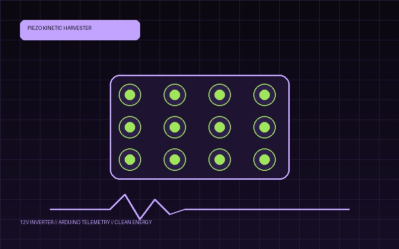
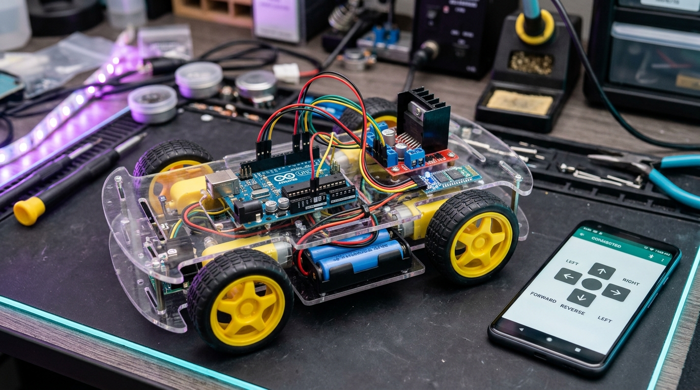
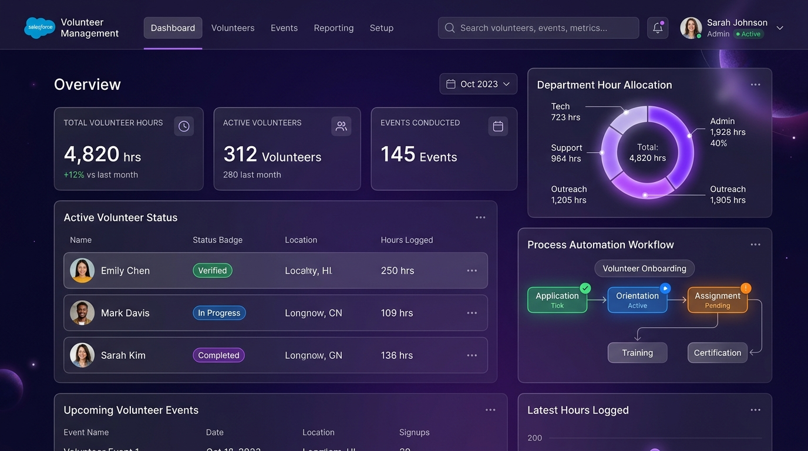
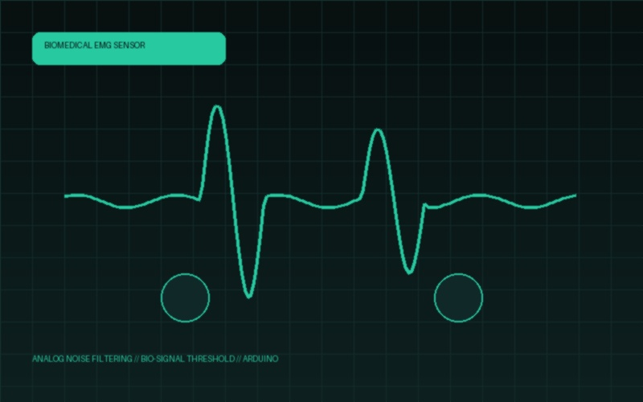

Embedded IoT & Hardware
Sensors & Microcontrollers
Designing physical computing prototypes with Arduino Uno, ESP32, piezoelectric transducers, EMG bio-amplifiers, and wireless RF modules.
Computer Science & Embedded Systems Engineer
B.E graduate from P.A. College of Engineering (VTU, CGPA 8.9). Fabricating kinetic energy harvesting hardware, Salesforce cloud platforms, and responsive web systems.

Integrating physical micro-electronics, cloud platforms, and human-centric software interfaces.
Sensors & Microcontrollers
Designing physical computing prototypes with Arduino Uno, ESP32, piezoelectric transducers, EMG bio-amplifiers, and wireless RF modules.
Platforms & Architecture
Building robust cloud systems with Salesforce CRM, record-triggered automation flows, and high-performance web frontends in modern JavaScript.
Interaction & Tokens
Structuring clear wireframes, design tokens, and fluid layout rhythms in Figma. Bridging technical logic with visual restraint.
Sample production logic from kinetic energy harvesting and cloud automation pipelines.
// Footstep Kinetic Power Harvesting with Arduino Uno & LCD Telemetry
#include <LiquidCrystal.h>
const int PIEZO_ANALOG_PIN = A0;
float harvestedVoltage = 0.0;
unsigned long stepCount = 0;
void setup() {
Serial.begin(9600);
pinMode(PIEZO_ANALOG_PIN, INPUT);
}
void loop() {
int rawSignal = analogRead(PIEZO_ANALOG_PIN);
if (rawSignal > 120) {
stepCount++;
harvestedVoltage = (rawSignal * 5.0) / 1023.0;
Serial.print("Kinetic Harvest: ");
Serial.print(harvestedVoltage);
Serial.println(" V | Charging Battery...");
}
delay(100);
}Hardware telemetry, cloud pipelines, and web applications fabricated by Sahla.

Kinetic energy harvesting system utilizing piezoelectric transducer tile arrays, full-wave bridge rectifiers, and 16x2 LCD telemetry to power smart urban infrastructure.

Led an engineering team building an intelligent wireless RC rover powered by HC-05 Bluetooth transceiver, dual L298N H-Bridge motor shields, and obstacle avoidance sensors.

Architected custom Salesforce CRM schema, record-triggered automation flows, multi-tier approval mechanisms, and analytics executive reporting dashboards.

Biomedical electromyography (EMG) monitoring device that amplifies muscle potential, filters physiological noise, and transmits real-time telemetry to clinical endpoints.
Academic excellence and foundational coursework at VTU-affiliated engineering institutions.
Graduated with distinction (CGPA: 8.9). Specialized in embedded hardware computing, algorithms, cloud platforms, and computer networks.
Physics, Chemistry, Mathematics, Biology. Solid foundation in numerical problem solving, logic, and physical sciences.
Completed general academic foundation with top academic honors.